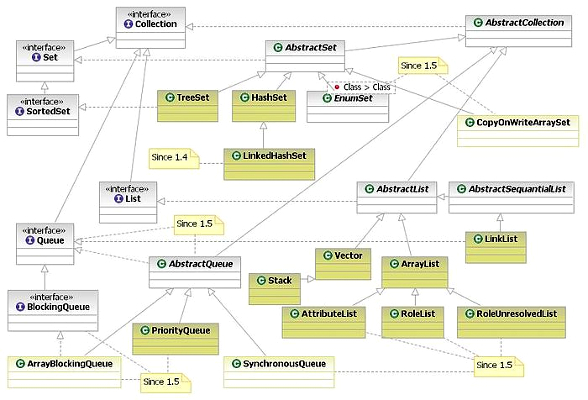

Шпаргалка Java программиста 3. Коллекции в Java (стандартные, guava, apache, trove, gs-collections и другие)
Сегодня я хотел бы поговорить о коллекциях в Java. Это тема встречается практически на любом техническом интервью Java разработчика, однако далеко не все разработчики в совершенстве освоили все коллекции даже стандартной библиотеки, не говоря уже о всех библиотеках с альтернативными реализациями коллекций, таких как guava, apache, trove и ряд других. Давайте посмотрим какие вообще коллекции можно найти в мире Java и какие методы работы с ними существуют.

Эта статья полезна как для начинающих (чтобы получить общее понимание что такое коллекции и как с ними работать), так и для более опытных программистов, которые возможно найдут в ней что-то полезное или просто структурируют свои знания. Собственно, главное чтобы у вас были хотя бы базовые знания о коллекциях в любом языке программирования, так как в статье не будет объяснений что такое коллекция в принципе.
Общее оглавление 'Шпаргалок'
I. Стандартная библиотека коллекций Java
Естественно, практически все и так знают основные коллекции в JDK, но все-таки вспомним о них, если вы уверены, что и так все знаете о стандартных коллекциях можете смело пропускать все что в спойлерах до следующего раздела.
Замечание о коллекциях для начинающих
1) Интерфейсы коллекций JDK
Интерфейсы коллекций JDK
Интерфейсы коллекций
|
Название |
Описание |
|
Интерфейс означающий что у коллекции есть iterator и её можно обойти с помощью for(Type value:collection). Есть почти у всех коллекций (кроме Map) | |
|
Основной интерфейс для большинства коллекций (кроме Map) | |
|
Список это упорядоченная в порядке добавления коллекция, так же известная как последовательность | |
|
Интерфейс реализующий работу с множествами (похожими на математические множества), дублирующие | |
|
Очередь — это коллекция, предназначенная для хранения объектов до обработки, в отличии от обычных операций над коллекциями, очередь предоставляет дополнительные методы добавление, получения и просмотра. Быстрый доступ по индексу элемента, как правило, не содержит. Расширяет Collection интерфейс | |
|
Двухсторонняя очередь, поддерживает добавление и удаление элементов с обоих концов. Расширяет | |
|
Работает со соответствием ключ — значение. Каждый ключ соответствует только одному значению. В | |
|
Автоматически отсортированное множество, либо в натуральном порядке (для подробностей смотрите | |
|
Это map'а ключи которой автоматически отсортированы, либо в натуральном порядке, либо с помощью | |
|
Это SortedSet, к которому дополнительно добавили методы для поиска ближайшего значения к заданному значению поиска. NavigableSet может быть доступен для доступа и обхода или в порядке | |
|
Это SortedMap, к которому дополнительно добавили методы для поиска ближайшего значения к заданному значению поиска. Доступен для доступа и обхода или в порядке убывания значений или в |
Интерфейсы из пакета java.util.concurrent
|
Название |
Описание |
|
Многопоточная реализация Queue, содержащая возможность задавать размер очереди, блокировки по условиях, различные методы, по-разному обрабатывающие переполнение при добавлении или отсутствие данных при получении (бросают exception, блокируют поток постоянно или на время, возвращают false и т.п.) | |
|
Эта многопоточная очередь может блокировать вставляющий поток, до тех пор, пока принимающий поток не вытащит элемент из очереди, таким образом с её помощью можно реализовывать синхронные и асинхронные передачи сообщений между потоками | |
|
Аналогично BlockingQueue, но для двухсторонней очереди | |
|
Интерфейс, расширяет интерфейс Map. Добавляет ряд новых атомарных методов: putIfAbsent, remove, replace, которые позволяют облегчить и сделать более безопасным многопоточное программирование. | |
|
Расширяет интерфейс NavigableMap для многопоточного варианта |
Если вам интересны более подробная информация о интерфейсах и коллекциях из java.util.concurrent советую
прочитать вот эту статью.
2) Таблица с очень кратким описанием всех коллекций
Таблица с очень кратким описанием всех коллекций
|
Тип |
Однопоточные |
Многопоточные |
|
Lists |
|
|
|
|
|
|
|
Maps |
|
|
|
Sets |
|
|
* — на самом деле, BitSet хоть и называется Set'ом, интерфейс Set не наследует.
3) Устаревшие коллекции в JDK
Устаревшие коллекции Java
Универсальные коллекции общего назначения, которые признаны устаревшими (legacy)
|
Имя |
Описание |
|
Изначально задумывался как синхронизированный аналог HashMap, когда ещё не было возможности | |
|
Раньше использовался как синхронный вариант ArrayList, однако устарел по тем же причинам что и | |
|
Раньше использовался как для построения очереди, однако поскольку построен на основе Vector, |
Специализированные коллекции, построенные на устаревших (legacy) коллекциях
|
Имя |
Основан на |
Описание |
|
Как структура данных, построенная на Hashtable, Properties довольно устаревшая конструкция, | ||
|
Коллекция, хранящая настройки по умолчанию для Swing компонент |
4) Коллекции, реализующие интерфейс List (список)
Коллекции, реализующие интерфейс List (список)
Универсальные коллекции общего назначения, реализующие List:
|
Название |
Основан |
Описание |
Размер* |
|
Реализация List интерфейса на основе динамически изменяемого массива. В большинстве случаев, лучшая возможная реализация List интерфейса по потреблению памяти и производительности. В крайне редких случаях, когда требуются частые вставки в начало или середину списка с очень малым |
4*N | ||
|
Реализация List интерфейса на основе двухстороннего связанного списка, то есть когда каждый элемент, указывает на предыдущий и следующий элемент. Как правило, требует больше памяти и хуже по производительности, чем ArrayList, имеет смысл использовать лишь в редких случаях когда часто требуется вставка/удаление в середину списка с минимальными перемещениями по списку (но советую в этих случаях использовать TreeList от apache).Так же реализует Deque интерфейс. При работе через Queue интерфейс, LinkedList действует как FIFO очередь. Если интересны подробности LinkedList советую посмотреть эту статью. |
24*N |
Коллекции из пакета java.util.concurrent
|
Название |
Основан |
Описание |
|
Реализация List интерфейса, аналогичная ArrayList, но при каждом изменении списка, создается |
Узкоспециализированные коллекции на основе List.
|
Название |
Основан на |
Описание |
|
Коллекция для хранения списка ролей (Roles). Узкоспециализированная коллекция основанная на | ||
|
Коллекция для хранения списка unresolved ролей (Unresolved Roles). Узкоспециализированная | ||
|
Коллекция для хранения атрибутов MBean. Узкоспециализированная коллекция основанная на ArrayList |
* — размер дан в байтах для 32 битных систем и Compressed Oops, где N это capacity списка
5) Коллекции, реализующие интерфейс Set (множество)
Коллекции, реализующие интерфейс Set (множество)
|
Название |
Основан |
Описание |
Размер* |
|
Реализация Set интерфейса с использованием хеш-таблиц. В большинстве случаев, лучшая возможная реализация Set интерфейса. |
32*S + 4*C | ||
|
Реализация Set интерфейса на основе хеш-таблиц и связанного списка. Упорядоченное по добавлению множество, которое работает почти так же быстро как HashSet. В целом, практически тоже самое что HashSet, только порядок итерирования по множеству определен порядком добавления элемента во |
40 * S + 4*C | ||
|
Реализация NavigableSet интерфейса, используя красно-черное дерево. Отсортировано с помощью Comparator или натурального порядка, то есть обход/итерирование по множеству будет происходить в зависимости от правила сортировки. Основано на TreeMap, так же как HashSet основан на HashMap |
40 * S | ||
|
Высокопроизводительная реализация Set интерфейса, основанная на битовом векторе. Все элементы EnumSet объекта должны принадлежать к одному единственному enum типу |
S/8 |
* — размер дан в байтах для 32 битных систем и Compressed Oops, где С это capacity списка, S это size списка
Узкоспециализированные коллекции на основе Set
|
Название |
Основан |
Описание |
|
Коллекция для хранения информации о заданиях печати (print job's attribute set). |
Коллекции из пакета java.util.concurrent
|
Название |
Основан |
Описание |
|
Аналогично CopyOnWriteArrayList при каждом изменении создает копию всего множества, поэтому | ||
|
Является многопоточным аналогом TreeSet |
6) Коллекции, реализующие интерфейс Map (ассоциативный массив)
Коллекции, реализующие Map интерфейс
7) Коллекции, основанные на интерфейсах Queue/Deque (очереди)
Коллекции, основанные на Queue/Deque
8) Прочие коллекции
Прочие коллекции
|
Название |
Описание |
Размер* |
|
Несмотря на название, BitSet не реализует интерфейс Set. BitSet служит для компактной записи массива битов. |
N / 8 |
9) Методы работы с коллекциями
Методы работы с коллекциями
Алгоритмы- В классе Collections содержится много полезных статистических методов.
Для работы с любой коллекцией:
|
Метод |
Описание |
|
frequency(Collection, Object) |
Возвращает количество вхождений данного элемента в указанной коллекции |
|
disjoint(Collection, Collection) |
Возвращает true, если в двух коллекциях нет общих элементов |
|
addAll(Collection<? super T>, T...) |
Добавляет все элементы из указанного массива (или перечисленные в параметрах) в указанную коллекцию |
|
min(Collection) |
Возвращение минимального элемента из коллекции |
|
max(Collection) |
Возвращение максимального элемента из коллекции |
Для работы со списками:
|
Метод |
Описание |
|
sort(List) |
Сортировка с использованием алгоритма сортировки соединением (merge sort algorithm), производительность которой в большинстве случаев близка к производительности быстрой сортировки (high quality quicksort), гарантируется O(n*log n) производительность (в отличии от quicksort), и стабильность (в отличии от quicksort). Стабильная сортировка это такая которая не меняет порядок одинаковых элементов при сортировке |
|
binarySearch(List, Object) |
Поиск элемента в списке (list), используя binary search алгоритм. |
|
reverse(List) |
Изменение порядка всех элементов списка (list) |
|
shuffle(List) |
Перемешивание всех элементов в списке в случайном порядке |
|
fill(List, Object) |
Переписывание каждого элемента в списке каким-либо значением |
|
copy(List dest, List src) |
Копирование одного списка в другой |
|
rotate(List list, int distance) |
Передвигает все элементы в списке на указанное расстояние |
|
replaceAll(List list, Object oldVal, Object newVal) |
Заменяет все вхождения одного значения на другое |
|
indexOfSubList(List source, List target) |
Возвращает индекс первого вхождения списка target в список source |
|
lastIndexOfSubList(List source, List target) |
Возвращает индекс последнего вхождения списка target в список source |
|
swap(List, int, int) |
Меняет местами элементы, находящиеся на указанных позициях |
В Java 8 так же появился такой способ работы с коллекциями как stream Api, но мы рассмотрим примеры его использование далее в разделе 5.
10) Как устроенны разные типы коллекций JDK внутри
Как устроенны разные типы коллекций JDK внутри
|
Коллекция |
Описание внутреннего устройства |
|
ArrayList |
Данная коллекция лишь настройка над массивом + переменная хранящая size списка. Внутри просто |
|
LinkedList |
Внутри коллекции используется внутренний класс Node, содержащий ссылку на предыдущий элемент, |
|
HashMap |
Данная коллекция построена на хеш-таблице, то есть внутри коллекции находится массив внутреннего класса (buket) Node равный capacity коллекции. При добавлении нового элемента вычисляться его хеш-функция, делиться на capacity HashMap по модулю и таким образом вычисляется место элемента в массиве. Если на данном месте ещё не храниться элементов создается новый объект Node с ссылкой на добавляемый элемент и записывается в нужное место массива. Если на данном месте уже есть элемент/ы (происходит хеш-коллизия), то так Node является по сути односвязным списком, то есть содержит ссылку на следующий элемент, то можно обойти все элементы в списке и проверить их на equals добавляемому элементу, если этот такого совпадение не найдено, то создается новый объект Node и добавляется в конец списка. В случае, если количество элементов в связном списке (buket) становится более 8 элементов, вместо него создается бинарное дерево. Подробнее о хеш таблицах смотрите вики (в HashMap используется метод цепочек для разрешения коллизий). Если интересны подробности устройства HashMap советую посмотреть эту статью. |
|
HashSet |
HashSet это просто HashMap, в которую записывается фейковый объект Object вместо значения, при этом имеет значение только ключи. Внутри HashSet всегда хранится коллекция HashMap. |
|
IdentityHashMap |
IdentityHashMap это аналог HashMap, но при этом не требуется элементы проверять на equals, так |
|
LinkedHashMap/LinkedHashSet |
Внутренняя структура практически такая же как при HashMap, за исключением того что вместо |
|
TreeMap/TreeSet |
Внутренняя структура данных коллекций построена на сбалансированным красно-черным деревом, |
|
WeakHashMap |
Внутри все организовано практически как в HashMap, за исключением что вместо обычных ссылок |
|
EnumSet/EnumMap |
В EnumSet и EnumMap в отличие от HashSet и HashMap используются битовые векторы и массивы для |
11) Другие полезные сущности стандартной библиотеки коллекций
Другие полезные сущности стандартной библиотеки коллекций
Давайте посмотрим какие ещё полезные сущности содержит официальный гайд по коллекциями
1) Wrapper implementations – Обертки для добавления функциональности и изменения поведения других реализаций. Доступ исключительно через статистические методы.
2) Adapter implementations – данная реализация адаптирует один интерфейс коллекций к другому
3) Convenience implementations – Высокопроизводительные «мини-реализации» для интерфейсов коллекций.
4) Абстрактные реализации интерфейсов — Реализация общих функций (скелета коллекций) для упрощения создания конкретных реализаций коллекций.
4) Инфраструктура
5) Ordering
6) Runtime exceptions
7) Производительность
8) Утилиты для работы с массивами
II. Краткий обзор сторонних библиотек коллекций
Итак, Я хотел бы сделать обзор следующих сторонних библиотек: guava, apache, trove и gs-collections. Почему именно эти библиотеки? Guava и Apache Commons Collections очень популярны и встречались мне почти в любом Java проекте, Trove — тоже очень популярная библиотека, когда нужно уменьшить память и улучшить производительность работы с коллекциями. GS-collections — судя по оценкам весьма популярная библиотека на github'e (>1300 звезд), больше неё набрала «звезд» только guava. Так же мельком захвачу несколько других популярных библиотек.
Итак, для начала рассмотрим что предлагают различные библиотеки, их главные фишки (Предупреждение: это очень субъективно, для кого-то главными фишками будут совсем другие возможности библиотек).
2.1 Фишки разных библиотек коллекций
Давайте сделаем небольшой обзор главных фишек (на мой взгляд) разных библиотек коллекций:
1) Guava — данная коллекция от гугл практически самая популярная после стандартного фреймворка коллекций, она
добавляет ряд интересных коллекций, но самая главная «фишка» это скорее богатый набор классов-утилит со статическими
методами, расширяющими возможности Collections для работы со стандартными коллекциями, чем новые виды коллекций.
Стандартные коллекции она практически не заменяет.
2) Apache Commons Collections — данная коллекция ближайший «конкурент» guava, она так же предоставляет ряд
интересных коллекций, утилит по работе со стандартными коллекциями Java, а так же большое количество wrapper'ов для
изменения поведения коллекций. Кроме того она предоставляет свою реализацию map'ы с более простым механизм
итерирования по ней.
3) Trove — фишка данной коллекции в первую очередь в производительности и сокращении памяти, поэтому она
предлагает более быстрые реализации стандартных коллекций (и требующие меньше памяти), а так же коллекции
примитивных типов.
4) GS-collections — фишка данной коллекции в идее объединить методы обработки, такие как сортировка и классы
коллекций для создания замены использования статических методов классов-утилит. Данная библиотека предлагает замену
практически всех стандартным коллекциям и добавляет несколько новых.
III. Альтернативные виды коллекций в разных библиотеках
Тут я попробую кратко рассмотреть, какие новые интересные виды коллекций можно найти в разных библиотеках:
3.1 Альтернативные виды коллекций у Guava
Официальная информация: документация, исходные коды, javadoc.
Как подключить к проекту:
Maven, Gradle
Гугл разработал ряд интересных дополнений к существующим коллекциям, которые весьма и весьма полезны, если вы можете
использовать guava библиотеку в своем проекте. Можно сказать, что эти коллекции давно уже стали стандартом де-факто
для большинства Java проектов, поэтому для любого опытного разработчика важно знать их, даже если он по каким-то
причинам не может использовать их в своих проектах, зачастую на собеседованиях можно услышать вопросы по guava
коллекциям.
Давайте рассмотрим их поподробнее. Для начала рассмотрим интерфейсы основных коллекций и группы классов в guava.
Внимание: если таблица не помещается целиком, попробуйте уменьшить масштаб страницы или открыть в другом браузере.
|
Название |
Описание |
Примеры реализаций |
Примеры использования |
|
Хотя в стандартном фреймворке Java коллекций есть возможность сделать коллекцию неизменяемой вызвав |
JDK: ImmutableCollection, |
— если публичный метод возвращает коллекцию, которую гарантировано не должны менять другие классы, | |
|
Коллекция аналогичная Set, но позволяющая дополнительно считать количество добавлений элемента. Очень |
HashMultiset, |
— подсчет кол-ва вхождений слов в тексте | |
|
Практически любой опытный Java разработчик сталкивался с необходимостью использовать структуры вроде Map<K, List<V>> или Map<K,Set<V>>, при этом приходилось писать много лишнего кода, для упрощения работы в библиотеку guava были введены Multimap, то есть коллекции, позволяющие просто работать со случаями когда |
ArrayListMultimap, |
— реализация отношений один ко многим, таких как: | |
|
Достаточно часто встречаются ситуации, когда требуется создать Map'у работающую в обе стороны, то есть |
— словарь для перевода с одного языка в другой и обратно, | ||
|
Эта коллекция служит для замены коллекций вида Map<FirstName, Map<LastName, Person>>, |
— таблица, например, как в Excel | ||
|
Иногда нужно хранить в Map'e не ключ-значение, а тип-значение этого типа, для этого служит данная |
|||
|
Коллекция для хранения разных открытых и закрытых отрезков числовых значений, при этом отрезки могут |
Геометрические отрезки | ||
|
Коллекция, похожая на RangeSet, но при этом отрезки никогда не объединяются друг с другом. |
Геометрические отрезки | ||
|
Коллекция, похожая на ConcurrentMap, но при этом можно указать время какое будет хранится каждый |
ForwardingLoadingCache, |
кэши, |
3.2 Новые виды коллекций из Apache Commons Collections
Официальная информация: документация, исходные коды, документация пользователя, javadoc.
Как подключить к проекту:
Мaven,Gradle,Ivy
Внимание: если таблица не помещается целиком, попробуйте уменьшить масштаб страницы или открыть в другом браузере.
|
Название |
Описание |
Примеры реализаций |
Примеры использования |
|
Интерфейс аналогичный Immutable классам guava |
UnmodifiableBag, |
во всех случаях когда нужно создать не модифицированную коллекцию | |
|
Аналог интерфейса Map, но позволяющий итерироваться по Map напрямую без создания entry set. Используется |
HashedMap, |
Такие же как у обычной map'ы | |
|
Позволяет создавать Map'ы, упорядоченные по порядку добавления, но не использующие сортировку |
В случаях, когда обычно используется отдельно List и отдельно Map'а | ||
|
Аналог BiMap из Guava, то есть возможность получать значение по ключу, так и ключ по значению |
TreeBidiMap, |
Любые конвертации один к одному, которые требуется выполнять в обе стороны | |
|
Аналог Multiset из Guava, то есть возможность сохранять количество элементов каждого типа |
CollectionBag, |
подсчет кол-ва любых объектов | |
|
Позволяет создавать динамические коллекции, ограниченные каким-то размером сверху |
в случае, когда вы точно знаете что в коллекции не может быть больше определенного количества | ||
|
Аналог Multimap из Guava, то есть возможность сохранять множество элементов для одного ключа |
MultiValueMap |
для коллекций со связями один ключ – много значений | |
|
Коллекция для создания и хранения упорядоченных деревьев |
PatriciaTrie |
создание деревьев | |
|
Замена ArrayList и LinkedList, если требуется вставить элемент в середину списка, так как в данном списке данные хранятся в виде дерева, что позволяет с одной стороны относительно быстро получать данные по индексу, с другой стороны быстро вставлять данные в середину списка. |
TreeList |
замена LinkedList при частых добавлениях/ударениях в середине списка |
3.3 Trove коллекции
В отличии от остальных библиотек альтернативных коллекций, Trove не предлагает никакие новые уникальные виды
коллекций, зато предлагает оптимизацию существующих:
Во-первых, как известно, примитивные типы Java нельзя добавить в стандартные коллекции, только их обертки, что резко
увеличивает занимаемую память и несколько ухудшает производительность коллекций. Trove предлагает набор коллекций,
ключи и значения которых могут содержать примитивные типы.
Во-вторых, стандартные коллекции часто реализованы не самым оптимальным способом по потреблению памяти, например, каждый элемент HashMap храниться в отдельном объекте, а HashSet это HashMap хранящая фейковые объекты вместо ключей. Trove предлагает свои реализации таких коллекций на основе массивов и открытой адресации, что позволяет значительно сократить требуемую память и в некоторых случаях улучшить производительность.
Update: В комментариях, к статье было высказано мнение что Trove плохо использовать в новых проектах, так как он по всех параметрам уступает fastutil или GS (кол-во багов, полнота покрытия интерфейсов, производительность, активность поддержки, и т. д.). К сожалению, у меня нет возможности сейчас провести полноценный анализ/сравнение Trove с fastutil и GS, поэтому не могу проверить данное мнение, просто учитывайте его при выборе библиотеки альтернативных коллекций.
Официальная информация: документация, исходные коды, javadoc.
Как подключить к проекту:
Maven, Gradle, Ivy
|
Название |
Аналог JDK |
Описание |
|
Реализация Map интерфейса, которая использует хеш-таблицу с алгоритмом "открытой адресации" для разрешения коллизий (в отличии от HashMap где используется метод цепочек). Это позволяет не хранить и не создавать объекты класса Node, при этом сильно экономится память и, в некоторых случаях, улучшается производительность. | ||
|
Реализация Set интерфейса, которая использует хеш-таблицу с алгоритмом "открытой адресации" для разрешения коллизий | ||
|
Аналог LinkedHashSet, но используя хеш-таблицы с алгоритмом "открытой адресации" | ||
|
Более производительный аналог связного списка, однако накладывающий ряд ограничений на данные. | ||
|
TByteArrayList, |
Аналог ArrayList, который непосредственно хранит примитивные числовые значения, что резко сокращает затраты памяти и ускоряет обработку. Есть коллекции для всех семи примитивных числовых типов, шаблон наименования T[Тип]ArrayList | |
|
TCharLinkedList, |
Аналог LinkedList для хранения семи примитивных числовых типов, шаблон наименования T[Тип]LinkedList | |
|
Реализация стека для хранения примитивных числовых типов, шаблон наименования T[Тип]LinkedList | ||
|
Реализация очереди для хранения примитивных числовых типов, шаблон наименования T[Тип]Queue | ||
|
Реализация Set интерфейса для хранения примитивных типов, с алгоритмом открытой адресации, шаблон наименования T[Тип]HashSet | ||
|
TLongLongHashMap, |
Реализация Map интерфейса для хранения примитивных типов, с алгоритмом открытой адресации, шаблон наименования T[Тип][Тип]HashMap, где тип может быть Object |
3.4 GS-collections коллекции
Основная фишка данной библиотеке в том что нелогично и некрасиво то что методы обработки коллекций (сортировки, поиска) не добавлены в сами классы коллекций, а используется Collections.sort и т.п. методы, поэтому GS-collections предложили идею «богатых» коллекций (rich collections), которые хранят в себе все методы обработки, поиска, сортировки, то есть вместо Collections.sort(list) вызывается просто list.sort. Поэтому библиотека предлагает свои аналоги стандартных коллекций и дополнительно ряд новых коллекций.
Официальная информация: документация, исходные коды, документация пользователя, javadoc.
Как подключить к проекту:
Мaven,Gradle,Ivy
|
Название |
Аналог JDK |
Описание |
|
Аналог ArrayList с возможностью использовать функции вроде sort, select и т.п. прямо у объекта коллекции | ||
|
Аналог HashSet. См FastList | ||
|
Аналог TreeSet. См FastList | ||
|
Аналог HashMap. См FastList | ||
|
Аналог TreeMap. См FastList | ||
|
- |
Реализация BiMap, см. Guava | |
|
- |
Реализация Multiset, см. Guava | |
|
- |
Реализация отсортированного BiMap, см. Guava | |
|
Реализация стека с порядком «last-in, first-out», похожего на класс Stack JDK | ||
|
- |
Реализация Multimap, см. Guava | |
|
- |
Коллекции примитивных различных типов, принцип наименования такой же как у trove, но кроме аналогов JDK, так же существуют аналоги коллекций Stack, Bag |
3.5 Fastutil коллекции
Давайте очень кратко рассмотрим эту библиотеку для работы с коллекциями примитивных типов.
Подробнее можно найти информацию: документация, исходные коды, javadoc
|
Название |
Описание |
|
Byte2DoubleOpenHashMap, |
Коллекции различных примитивных типов, принцип наименования [Тип]ArrayList, [Тип]ArrayPriorityQueue и т.п. для списков или множеств, и [ТипКлюча]2[ТипЗначения]OpenHashMap и т.п. для Map. |
|
IntBigList, |
Коллекции различных примитивных типов очень Большого размера, эти коллекции позволяют использовать long элементов, вместо int. Внутри данные, как правило, хранятся как массивы массивов. Не рекомендуется использовать подобные коллекции там где хватит обычных, так как потери производительности могут достигать примерно 30%, однако такие коллекции позволяют работать с действительно большим количеством данных |
3.6 Прочие библиотеки коллекций и немного о производительности примитивных коллекций
Кроме Trove и Fastutil есть ещё несколько известных библиотек, реализующих коллекции примитивных типов и более быстрые аналоги стандартных коллекций:
1) HPPC — High Performance Primitive Collections for Java, так же предоставляет примитивные коллекции аналогичные коллекциям из JDK,
2) Koloboke (другое имя HFTC) — как можно понять из имени эту библиотеку примитивных типов разработал русский программист (Roman Leventov) в рамках проекта OpenHFT. Библиотека так же служит для реализации высокопроизводительных примитивных коллекций.
Если интересно сравнение производительности разных библиотек советую посмотреть эту статью, только нужно учитывать, что тестировали только коллекции HashMap и в определенных условиях. К тому же, замеряли только скорость работы, не учитывая занимаемую память (например, HashMap jdk могут занимать намного больше памяти чем аналоги от trove), а иногда память может быть даже более важной чем производительность.
Update: В комментариях, к статье было высказано мнение что Trove плохо использовать в новых проектах, так как он по всех параметрам уступает fastutil или GS (кол-во багов, полнота покрытия интерфейсов, производительность, активность поддержки, и т. д.). К сожалению, у меня нет возможности сейчас провести полноценный анализ/сравнение Trove с fastutil и GS, поэтому не могу проверить данное мнение, просто учитывайте его при выборе библиотеки альтернативных коллекций.
IV. Сравнение реализации самых популярных альтернативных коллекций в разных библиотеках
4.1 Реализация мультимножества (MultiSet/Bag) в библиотеках guava, Apache Commons Collections и GS
Collections
Итак, мультимножество это множество, которое сохраняет не только факт наличие элементов в множестве, но и количество
вхождений в него. В JDK его можно эмулировать конструкцией Map
<T, Integer>, но, естественно, специализированные коллекции позволяют использовать значительно меньше кода. Сравним
какие реализации данной коллекции предлагают разные библиотеки:
Внимание: если таблица не помещается целиком, попробуйте уменьшить масштаб страницы или открыть в другом браузере.
|
Тип коллекции |
Guava |
Apache Commons Collections |
GS Collections |
JDK |
|
Порядок коллекции не определен |
||||
|
Отсортированная в заданном или натуральном порядке |
||||
|
В порядке добавления |
- |
- |
||
|
Многопоточные |
||||
|
Многопоточные и отсортированные |
- |
|||
|
Не изменяемые |
||||
|
Не изменяемые и отсортированные |
Примеры использования мультимножества (MultiSet/Bag) для подсчета слов в тексте
Есть задача: дана строчка текста «Hello World! Hello All! Hi World!», нужно разобрать её на отдельные
слова где разделитель только пробел, сохранить в какую-нибудь коллекцию и вывести количество вхождений каждого
слова, общее количество слов в тексте и количество уникальных слов.
Посмотрим как это сделать с помощью
1. разных вариантов Multiset от Guava:
Используем HashMultiset от guava для подсчета слов
Используем TreeMultiset от guava для подсчета слов
Используем LinkedHashMultisetTest от guava для подсчета слов
Используем ConcurrentHashMultiset от guava для подсчета слов
2. разных вариантов Bag от Apache Commons Collections:
Использование HashBag из Apache Commons Collections
Использование TreeBag из Apache Commons Collections
Использование SynchronizedBag из Apache Commons Collections
Использование SynchronizedSortedBag из Apache Commons Collections
3. разных вариантов Bag от GS Collections:
Использование MutableBag из GS Collections
Использование MutableSortedBag из GS Collections
4. Ну и наконец, посмотрим как можно сделать тоже самое в чистом JDK с помощью эмуляции multiSet через HashMap
Эмуляция multiSet через HashMap
4.2 Реализация Multimap в библиотеках guava, Apache Commons Collections и GS Collections
Итак, Multimap это map, у которой у каждого ключа есть набор значений. Давайте сравним какие реализации есть данной
коллекции в разных библиотеках. В таблице ниже порядок ключей и порядок значений показывает как будет происходить
итерирования по ключам и значениям соответственно, дубликаты — может ли коллекция значений содержать дубликаты,
аналог ключей и значений — на каких коллекциях построены ключи и значения, JDK показывает аналог коллекции с помощью
JDK коллекций.
Внимание: если таблица не помещается целиком, попробуйте уменьшить масштаб страницы или открыть в другом браузере.
|
Порядок |
Порядок |
Дуб- |
Аналог |
Аналог |
Guava |
Apache |
GS |
JDK |
|
не задан |
в порядке |
да |
HashMap |
ArrayList |
ArrayList- |
MultiValueMap |
FastList- |
HashMap<K, |
|
не задан |
не задан |
нет |
HashMap |
HashSet |
HashMultimap |
MultiValueMap. |
UnifiedSet- |
HashMap<K, |
|
не задан |
отсорти- |
нет |
HashMap |
TreeSet |
Multimaps. |
MultiValueMap. |
TreeSortedSet- |
HashMap<K, |
|
в порядке |
в порядке |
да |
Linked |
ArrayList |
LinkedList- |
MultiValueMap. |
LinkedHashMap< | |
|
в порядке |
в порядке |
нет |
LinkedHash- |
Linked- |
LinkedHash- |
MultiValueMap. |
LinkedHashMap<K, | |
|
отсорти- |
отсорти- |
нет |
TreeMap |
TreeSet |
TreeMultimap |
MultiValueMap. |
TreeMap<K, |
Как видно из таблицы, в Apache Commons Collections есть лишь одна реализация данного вида коллекции, остальные можно
получить оборачивая стандартные коллекции при создании. В guava намного больше уже определенных коллекций, при этом
есть возможность реализовать обертку над любой map'ами и любыми коллекциями значений. В GS Collections есть так же
специальные коллекция multimap основанная на Bag (HashBagMultimap), см. multiset и multimap.
Примеры использования Multimap для сохранения всех вхождений слов в тексте
Есть задача: дана строчка текста «Hello World! Hello All! Hi World!», нужно разобрать её на отдельные
слова где разделитель только пробел и теперь нам нужно знать не только сколько каждых слов в тексте, но и все
индекс вхождения слова в тесте, то есть что Hello это первое и третье слово в тексте и т.д.
Посмотрим как это сделать с помощью
1. разных вариантов Multimap от Guava:
Используем HashMultimap от guava
Используем ArrayListMultimapTest от guava
Используем LinkedHashMultimapTest от guava
Используем LinkedListMultimapTest от guava
Используем TreeMultimapTest от guava
2. разных вариантов MultiValueMap от Apache Commons Collections:
Используем MultiValueMap от Apache Commons Collections
Используем MultiValueMap, оборачивающий TreeMap<String, TreeSet>()
Используем MultiValueMap, оборачивающий LinkedHashMap<String, LinkedHashSet>()
3. разных вариантов Multimap от GS Collections:
Использование FastListMultimap
Использование HashBagMultimap
Использование TreeSortedSetMultimap
4. Ну и наконец, посмотрим как можно сделать тоже самое в чистом JDK с помощью эмуляции multiMap через HashMap
Эмуляция multiMap через HashMap
4.3 Реализация BiMap в библиотеках guava, Apache Commons Collections и GS Collections
Реализация BiMap во всех библиотеках достаточно похожа, за исключением названия HashBiMap в guava и GS Collections и
BidiMap в Apache Commons Collections. Кроме простейшей HashBiMap, у guava есть отдельные коллекции для работы с Enum
в качестве ключей или значений, такие как EnumHashBiMap или EnumBiMap, у Apache Commons Collections есть ряд
коллекций, где ключи упорядочены по добавлению или отсортированы.
Примеры использования BiMap для создания русско-английского «переводчика», действующего в обе стороны
Есть задача: есть массивы английских и русских слов соответствующие друг другу, нужно реализовать
коллекцию русско-английского словаря, с возможностью перевода в обе стороны.
Посмотрим как это сделать с помощью
1. разных вариантов BiMap от Guava:
Используем BiMap от guava
Используем EnumBiMap от guava
Используем EnumHashBiMap от guava
2. C помощью BidiMap от Apache Commons Collections:
Используем DualHashBidiMap от Apache Commons Collections
3. C помощью HashBiMap от GS Collections:
Используем HashBiMap от GS Collections
4. Ну и наконец, посмотрим как можно сделать тоже самое в чистом JDK
Используем две HashMap для эмуляции BiMap
V. Сравнение операций работы с коллекциями
Давайте кратко посмотрим какие дополнительные методы, операции и алгоритмы предлагают альтернативные библиотеки по сравнению со стандартными возможностями JDK. Цель этого, естественно, не перечислить все возможные методы всех библиотек (это невозможно), а скорее дать краткое представление о философии и синтаксисе разных библиотек, чтобы каждый мог выбрать то что больше нравится именно ему.
5.1 Сравним создание коллекций с помощью методов различных библиотек.
Guava и gs-collections предлагают создание коллекций через статические методы утилиты вместо использование new, давайте посмотрим насколько это удобнее обычного способа jdk.
5.1.1) Создание списка (List)
|
Название |
JDK |
guava |
gs-collections |
|
Создание пустого списка |
new ArrayList<>() |
Lists.newArrayList() |
FastList.newList() |
|
Создание списка из значений |
Arrays.asList(«1», «2», «3») |
Lists.newArrayList(«1», «2», «3») |
FastList.newListWith(«1», «2», «3») |
|
Создать список с |
new ArrayList<>(100) |
Lists.newArrayListWithCapacity(100) |
FastList.newList(100) |
|
Создать список из |
new ArrayList<>(collection) |
Lists.newArrayList(collection) |
FastList.newList(collection) |
|
Создать список из |
- |
Lists.newArrayList(iterable) |
FastList.newList(iterable) |
|
Создать список |
- |
Lists.newArrayList(iterator) |
- |
|
Создать список из массива |
Arrays.asList(array) |
Lists.newArrayList(array) |
FastList.newListWith(array) |
|
Создать список |
— |
— |
FastList.newWithNValues(10, () -> «1») |
Примеры создания списка
5.1.2) Создание множества (set)
|
Название |
JDK |
guava |
gs-collections |
|
Создание пустого |
new HashSet<>() |
Sets.newHashSet() |
UnifiedSet.newSet() |
|
Создать множество из |
new HashSet<>(Arrays.asList(«alpha», «beta», «gamma»)) |
Sets.newHashSet(«alpha», «beta», «gamma») |
UnifiedSet.newSetWith(«alpha», «beta», «gamma») |
|
Создать множество из |
new HashSet<>(collection) |
Sets.newHashSet(collection) |
UnifiedSet.newSet(collection) |
|
Создать множество из |
- |
Sets.newHashSet(iterable) |
UnifiedSet.newSet(iterable) |
|
Создать множество |
- |
Sets.newHashSet(iterator); |
- |
|
Создать множество |
new HashSet<>(Arrays.asList(array)) |
Sets.newHashSet(array) |
UnifiedSet.newSetWith(array) |
Примеры создания множества
5.1.3) Создание Map
|
Название |
JDK |
guava |
gs-collections |
|
Создание пустой map'ы |
new HashMap<>() |
Maps.newHashMap() |
UnifiedMap.newMap() |
|
Создать map'у c |
new HashMap<>(130) |
Maps.newHashMapWithExpectedSize(100) |
UnifiedMap.newMap(130) |
|
Создать map'у из другой map'ы |
new HashMap<>(map) |
Maps.newHashMap(map) |
UnifiedMap.newMap(map) |
|
Создать map'у из ключей |
- |
- |
UnifiedMap.newWithKeysValues(«1», «a», «2», «b») |
Примеры создания map
5.2 Сравним методы поиска из различных библиотек.
|
Название |
JDK |
guava |
apache |
gs-collections |
|
Найти количество вхождений объекта |
Collections.frequency(collection, «1») |
Iterables.frequency(iterable, «1») |
CollectionUtils.cardinality(«1», iterable) |
mutableCollection.count((each) -> «a1».equals(each)) |
|
Вернуть первый элемент коллекции или значение по умолчанию |
collection.stream().findFirst().orElse(«1») |
Iterables.getFirst(iterable, «1») |
CollectionUtils.get(iterable, 0) |
orderedIterable.getFirst() |
|
Вернуть последний элемент коллекции или значение по умолчанию |
collection.stream().skip(collection.size()-1).findFirst().orElse(«1»); |
Iterables.getLast(iterable, «1») |
CollectionUtils.get(collection, collection.size()-1) |
orderedIterable.getLast() |
|
Вернуть максимальный элемент |
Collections.max(collection) |
Ordering.natural().max(iterable) |
- |
orderedIterable.max() |
|
Вернуть минимальный элемент |
Collections.min(collection) |
Ordering.natural().min(iterable) |
- |
orderedIterable.min() |
|
Вернуть единственный элемент коллекции |
Iterables.getOnlyElement(iterable) |
CollectionUtils.extractSingleton(collection) |
||
|
Найти элемент в отсортированном списке |
Collections.binarySearch(list, «13») |
Ordering.natural().binarySearch(list, «13») |
mutableList.binarySearch(«13») | |
|
Найти элемент в неотсортированной коллекции |
collection.stream().filter(«13»::equals).findFirst().get() |
Iterables.find(iterable, «13»::equals) |
CollectionUtils.find(iterable, «13»::equals) |
mutableList.select(«13»::equals).get(0) |
|
Выбрать все элементы по условию |
collection.stream().filter((s) -> s.contains(«1»)).collect(Collectors.toList()) |
Iterables.filter(iterable, (s) -> s.contains(«1»)) |
CollectionUtils.select(iterable, (s) -> s.contains(«1»)) |
mutableCollection.select((s) -> s.contains(«1»)) |
Обратите внимание что методы разных библиотек работают с разными сущностями, это можно определить по названию переменных: collection — любая реализация интерфейса Collection, iterable — интерфейса Iterable, list — интерфейса List, orderedIterable и mutableList соответствующих интерфейсов в GS (orderedIterable — интерфейс для всех коллекций у которых определен порядок элементов, mutableList — интерфейс для любых изменяемых списков)
Примеры:
1) Найти количество вхождений объекта
2) Вернуть первый элемент коллекции
3) Вернуть последний элемент коллекции
4) Вернуть максимальный элемент
5) Вернуть минимальный элемент
6) вернуть единственный элемент коллекции
7) найти элемент в отсортированом списке
8) найти элемент в неотсортированной коллекции
9) выбрать все элементы по условию
5.3 Сравним методы сравнений, объединений и пересечений коллекций
|
Название |
JDK |
guava |
apache |
gs-collections |
|
Проверить полное соответствие двух коллекций |
collection1.containsAll(collection2) |
Iterables.elementsEqual(iterable1, iterable2) |
CollectionUtils.containsAll(collection1, collection2) |
mutableCollection1.containsAll(mutableCollection2) |
|
Наличие хотя бы одного общего элемента |
!Collections.disjoint(collection1, collection2) |
!Sets.intersection(set1, set2).isEmpty() |
CollectionUtils.containsAny(collection1, collection2) |
!mutableSet1.intersect(mutableSet2).isEmpty() |
|
Найти все общие элементы (пересечение) |
Set<T> result = new HashSet<>(set1); |
Sets.intersection(set1, set2) |
CollectionUtils.intersection(collection1, collection2) |
mutableSet1.intersect(mutableSet2) |
|
Отсутствие общих элементов |
Collections.disjoint(collection1, collection2) |
Sets.intersection(set1, set2).isEmpty() |
!CollectionUtils.containsAny(collection1, collection2) |
mutableSet1.intersect(mutableSet2).isEmpty() |
|
Найти все элементы, которые есть в одной коллекции и нет в другой (difference) |
Set<T> result = new HashSet<>(set1); |
Sets.difference(set1, set2) |
CollectionUtils.removeAll(collection1, collection2) |
mutableSet1.difference(mutableSet2) |
|
Найти все различные элементы (symmetric difference) |
Sets.symmetricDifference(set1, set2) |
CollectionUtils.disjunction(collection1, collection2) |
mutableSet1.symmetricDifference(mutableSet2) | |
|
Получить объедение двух коллекций |
Set<T> result = new HashSet<>(set1); |
Sets.union(set1, set2) |
CollectionUtils.union(collection1, collection2) |
mutableSet1.union(mutableSet2) |
Примеры:
1) Проверить полное соответствие двух коллекций
2) Проверить наличие хотя бы одного общего элемента у двух коллекций
3) Найти все общие элементы (пересечение) у двух коллекций
4) Найти все элементы, которые есть в одной коллекции и нет в другой (difference)
5) Найти все различные элементы (symmetric difference) у двух коллекций
6) Получить объедение двух коллекций
5.4 Сравним методы изменения коллекции
|
Название |
JDK |
guava |
apache |
gs-collections |
|
Сортировка коллекции |
Collections.sort(list); |
Ordering.natural().sortedCopy(iterable) |
mutableList.sortThis() | |
|
Удалить все элементы соответствующие условию |
collection.removeIf((s) -> s.contains(«1»)) |
Iterables.removeIf(iterable, (s) -> s.contains(«1»)) |
CollectionUtils.filter(iterable, (s) -> !s.contains(«1»)) |
mutableCollection.removeIf((Predicate<String>) (s) -> s.contains(«1»)) |
|
Удалить все элементы не соответствующие условию |
collection.removeIf((s) -> !s.contains(«1»)) |
Iterables.removeIf(iterable, (s) -> !s.contains(«1»)) |
CollectionUtils.filter(iterable, (s) -> s.contains(«1»)) |
mutableCollection.removeIf((Predicate<String>) (s) -> !s.contains(«1»)) |
|
Изменить все элементы коллекции |
collection.stream().map((s) -> s + "_1").collect(Collectors.toList()) |
Iterables.transform(iterable, (s) -> s + "_1") |
CollectionUtils.transform(collection, (s) -> s + "_1") |
mutableCollection.collect((s) -> s + "_1") |
|
Изменить свойства каждого элемента |
collection.stream().forEach((s) -> s.append("_1")) |
Iterables.transform(iterable, (s) -> s.append("_1")) |
CollectionUtils.transform(collection, (s) -> s.append("_1")) |
mutableCollection.forEach((Procedure<StringBuilder>) (s) -> s.append("_1")) |
1) Сортировка коллекции
2) Удалить все элементы соответствующие условию
3) Удалить все элементы не соответствующие условию
4) Преобразовать все элементы коллекции
5) Изменить свойства каждого элемента коллекции
VI. Сравнение стандартных и альтернативных коллекций
5.1 Какие вообще бывают коллекции
Для начала рассмотрим какие основные коллекции встречаются в программировании (не только в Java, а вообще):
1) Вектор (Список)— элементы коллекции упорядочены, можно обойти все элементы по очереди или обратиться по индексу,
— Массив — реализация вектора, когда данные находятся в памяти непосредственно друг за другом
— Динамический массив — реализация массива, когда размер массива может увеличиваться во время выполнения,
— Односвязный список — реализация списка, когда каждый элемент списка содержит значение и ссылку на
следующий элемент, в отличии от массива более структурно гибок,
— Двусвязный список — реализация списка когда каждый элемент списка содержит значение и ссылку на
следующий и предыдущий элемент,
2) Стек (Stack) — коллекция, реализующая принцип хранения «LIFO» («последним пришёл — первым вышел»). В
стеке постоянно доступен элемент добавленый последним, если он ещё не удален/извлечен.
3) Очередь (Queue) — коллекция, реализующая принцип хранения «FIFO» («первым пришёл— первым вышел»). В
очереди постоянно доступен только добавлен самым первым из имеющихся и ещё не удален/извлечен.
4) Двухсторонняя очередь (Double-ended queue) — очередь, которая позволяет добавлять и извлекать данные и
с начала очереди и с конца.
5) Очередь с приоритетом (англ. priority queue) — очередь, позволяющая добавить новый элемент и извлечь
максимум. Все данные хранятся в порядке убывания приоритета,
— куча (heap) — одна из реализаций очереди с приоритетом, с помощью дерева,
6) Ассоциативный массив (словарь), (Associative array, Dictionary) — неупорядоченная коллекция, хранящая
пары «ключ— значение»
— Хеш-таблица (hashtable) — реализация ассоциативного массива, построенная на вычислении хеша значения,
— Хеш-таблица со связями один ко многим (Multimap или multihash) — реализация Хеш-таблицы, которая хранит
отношение ключ и много значений,
— Двух-сторонняя хеш-таблица (bi-map) — реализация Хеш-таблицы, которая позволяет получать как значение
по ключу, так и ключ по значению,
— Упорядоченная хеш-таблица (hashtable) — хеш-таблица, возвращающая элементы в порядке добавления,
— Отсортированная хеш-таблица (hashtable) — хеш-таблица, возвращающая элементы отсортированном порядке,
7) Множество— неупорядоченная коллекция, хранящая набор уникальных значений и поддерживающая аналогичные
операциям с математическими множествами,
— Мультимножество— неупорядоченная коллекция, аналогичная множеству, но допускающая наличие в коллекции
одновременно двух и более одинаковых значений,
— Упорядоченное множество— коллекция, аналогичная множеству, но возвращает элементы в порядке добавления,
— Отсортированное множество— коллекция, аналогичная множеству, но возвращает элементы в отсортированном порядке,
8)Битовый массив — то есть массив значений 1 или 0,
9) Множество зарытых или открытых отрезков — то есть структура хранящая и работающая с геометрическими
интервалами,
10) Деревья — структура данных, хранящая данные в виде дерева,
11) Кеши — коллекции для работы с устаревающими за определенное время данными,
Давайте посмотрим какие из данных сущностей соответствуют каким коллекциям и интерфейсам Java и альтернативных библиотек:
Внимание: если таблица не помещается целиком, попробуйте уменьшить масштаб страницы или открыть в другом браузере.
|
Название |
List |
Set |
Map |
Query |
guava |
apache |
gs-collections |
|
1) Вектор (Список) |
|||||||
|
Двусвязный список |
|||||||
|
2) Стек (Stack) |
|||||||
|
3) Очередь (Queue) |
|||||||
|
4) Двухсторонняя очередь |
|||||||
|
5) Очередь с приоритетом |
|||||||
|
6) Ассоциативный массив (словарь) |
|||||||
|
Хеш-таблица (hashtable) |
|||||||
|
Хеш-таблица со связями один ко многим |
|||||||
|
Двух-сторонняя хеш-таблица |
|||||||
|
Упорядоченная хеш-таблица |
|||||||
|
Отсортированная хеш-таблица |
|||||||
|
7) Множество |
|||||||
|
Мультимножество |
|||||||
|
Упорядоченное множество |
|||||||
|
Отсортированное множество |
|||||||
|
8)Битовый массив |
|||||||
|
9) Множество зарытых или открытых отрезков |
|||||||
|
10) Деревья |
|||||||
|
11)Кеши |
VII. Заключение
Я специально не буду делать выводов какая библиотека хуже или лучше, так как во многом это дело вкуса, но в любом случае в альтернативных коллекциях можно найти много полезных коллекций и методов, если знать где искать. Спасибо, за то что дочитали (или долистали) до конца, надеюсь вы сумели найти в этой статье что-нибудь для себя полезное.
Исходные коды всех примеров можно найти на github'е.
Источники, которые использовались для написания статьи:
1. Обзор java.util.concurrent.* tutorial
2. Trove library: using primitive collections for performance
3. Java performance tuning tips
4. Large HashMap overview
5. Memory consumption of popular Java data types
6. И, естественно, официальная документация, javadoc и исходные коды всех рассмотренных библиотек
P.P.S. Так же советую посмотреть мой opensource проект [useful-java-links](https://github.com/Vedenin/useful-java-links/tree/master/link-rus) — возможно, наиболее полная коллекция полезных Java библиотек, фреймворков и русскоязычного обучающего видео. Так же есть аналогичная [английская версия](https://github.com/Vedenin/useful-java-links/) этого проекта и начинаю opensource подпроект [Hello world](https://github.com/Vedenin/useful-java-links/tree/master/helloworlds) по подготовке коллекции простых примеров для разных Java библиотек в одном maven проекте (буду благодарен за любую помощь).
Общее оглавление 'Шпаргалок'